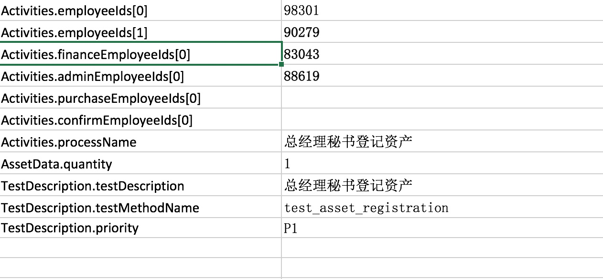

指定特定的审批人构建工作流的自动化测试
以下通过制定审批人的方式来构建审批流程业务,包括了以下几个步骤:
- 审批人指定
- 不同的审批通过动作的设定
- 构建审批流程
1. 审批人指定
通过外部数据指定: 
employeeIds 表示第一批需要审批的员工 financeEmployeeIds 表述财务审批的员工 adminEmployeeIds 表示行政的员工
以下是data provider的定义:
@DataProvider(name = "Asset_data")
public Iterator<Object[]> getTestData(Method m) throws Exception{
Map<String, Class> clazzMap = new HashMap<String, Class>();
clazzMap.put("AssetData", AssetTestData.class);
clazzMap.put("Activities", Activities.class);
clazzMap.put("TestDescription", TestDescription.class);
Iterator<Object[]> y = TestDescription.filterByMethod("testcase/flows/AssetApprovalTestCases.xls", m, clazzMap);
return y;
}
所有的这些员工号都对应到Activities这个类了
2. 构建审批流
代码如下:
@SelfDefinedStep(description = "资产登记审批")
public static void approveAssetRegistration(WebDriver driver,AssetTestData d,Activities approvals){
WorkFlowBuilder.build(driver,d)
.add(assetRegistrationApprove(driver,d),approvals.approveFrontChain()
, approvals.approvalAdminChain())
.add(assetRegistrationApproveByFinance(driver,d)
, approvals.approveFinanceChain())
.process();
}
这里面由于前台审批.行政审批和财务审批都是不一样的动作,所有分别实现:
- assetRegistrationApprove
- assetRegistrationApproveByFinance
@SelfDefinedStep(description = "审批")
public static TestAction assetRegistrationApprove(WebDriver driver,AssetTestData d,TestAction...beforeApprove){
return () -> {
AssetSearchFilterTestData t = new AssetSearchFilterTestData();
t.setAssetCode(d.getAssetCode());
assetQuery(driver, t, ()
-> WebDriverHelper.get(driver,
EnvironmentHelper.get(AppName.ZICHAN.getName()).getDomainUrl()
+ "/asset/checkedlist"));
WebTestActionBuilder.use(AssetsMainPage.class,driver).getApprove().click();
for (TestAction action : beforeApprove) {
action.execute();
}
WebTestActionBuilder.createTestActionByUIAction(ApprovePage.class,"审批通过",driver,d).execute();
};
}
public static TestAction assetRegistrationApproveByFinance(WebDriver driver,AssetTestData d){
return assetRegistrationApprove(driver, d, ()
-> WebTestActionBuilder.use(AssetDetailPage.class,driver)
.process("资产财务信息填写并审批通过",d));
}
由于这里的实现使用了一些JAVA8 的lambda的写法,可能一下子看不太清楚,所以有兴趣可以了解一下.
3. 实现测试用例
@Test(dataProvider = "Asset_data",description = "登记申请资产")
public void test_asset_registration(Activities approvals,AssetTestData data,
TestDescription td){
WebDriver driver = loginAndReturnDriver(approvals.startEmployee());
AssetsFlows.addAsset(driver, data);
DooiooLoginHelper.logout(driver);
AssetsFlows.approveAssetRegistration(driver, data, approvals);
SoftAssertion sa = new SoftAssertion();
sa.assertEquals(SpringJdbcTemplateUtils.useDataBase(AppName.ZICHAN.getName()).getAllRawResult("select * from T_ASSETS_REGISTER_TASK where assetId=?"
, data.getId()).size(),0,"审批任务已经全部完成");
sa.getFinalResult();
}